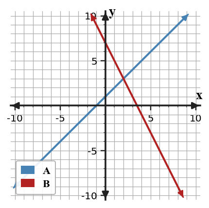

Factor each trinomial with leading coefficient $1$.
Complete the table for $2x^2+5x+3$ and use it to write the factored form.
| Step | Value |
|---|---|
| Product $ac$ | $6$ |
| Needed sum | $5$ |
| Number pair | _____ and _____ |
| Factored form | _____ |
Compare the product-sum table and the binomial product below. Do they support the same trinomial?
| Product needed | Sum needed | Pair |
|---|---|---|
| $-15$ | $2$ | $5$ and $-3$ |
Product: $(3x+5)(x-3)$. Explain the connection or the conflict.
Design a short diamond problem that leads to a quadratic trinomial $ax^2+bx+c$ with $a\ne 1$ and integer factors. Provide the diamond problem, the factored form, and the expanded form.
Factor each trinomial with leading coefficient $1$.
Complete the table for $2x^2+5x+3$ and use it to write the factored form.
| Step | Value |
|---|---|
| Product $ac$ | $6$ |
| Needed sum | $5$ |
| Number pair | _____ and _____ |
| Factored form | _____ |
The numbers are $2$ and $3$ because $2\cdot3=6$ and $2+3=5$.
$2x^2+5x+3=2x^2+2x+3x+3=2x(x+1)+3(x+1)=(2x+3)(x+1)$.
Compare the product-sum table and the binomial product below. Do they support the same trinomial?
| Product needed | Sum needed | Pair |
|---|---|---|
| $-15$ | $2$ | $5$ and $-3$ |
Product: $(3x+5)(x-3)$. Explain the connection or the conflict.
The table pair $5$ and $-3$ has product $-15$ and sum $2$.
But $(3x+5)(x-3)=3x^2-9x+5x-15=3x^2-4x-15$.
The product $-15$ matches the constant, but the middle coefficient is $-4$, not $2$, so there is a conflict.
Design a short diamond problem that leads to a quadratic trinomial $ax^2+bx+c$ with $a\ne 1$ and integer factors. Provide the diamond problem, the factored form, and the expanded form.
Example diamond: product $12$, sum $7$.
Use $2x^2+7x+6$. Since $ac=12$ and $3+4=7$, split the middle: $2x^2+3x+4x+6=(2x+3)(x+2)$.
Expanded form: $2x^2+7x+6$.
In the system $y=3x-4$ and $2x+y=11$, which expression should replace $y$ during substitution?
In the system $x=2y+5$ and $3x-y=20$, which expression should replace $x$ during substitution?
Which equation is already solved for a variable: $4x+y=9$ or $y=-2x+7$?
Substitute to determine the solution type, then interpret what that result means about the graph relationship.
In the system $y=3x-4$ and $2x+y=11$, which expression should replace $y$ during substitution?
Replace $y$ with $3x-4$ in the second equation.
In the system $x=2y+5$ and $3x-y=20$, which expression should replace $x$ during substitution?
Replace $x$ with $2y+5$ in the second equation.
Which equation is already solved for a variable: $4x+y=9$ or $y=-2x+7$?
$y=-2x+7$ is already solved for a variable because $y$ is isolated.
Substitute to determine the solution type, then interpret what that result means about the graph relationship.
Source limitation: This copied practice-set item does not include the specific equations, system, or constraints needed for a unique numerical solution. Do not invent missing data; identify the missing information before solving.
Use substitution to solve the system. Show the one-variable equation that results from your substitution.
The graph shows a system that could be solved by substitution. Estimate the intersection from the graph, then solve using the equations $y=x+1$ and $y=-2x+7$.

A school store sells pencils and pens. A student writes $p+n=60$ and $p+2n=95$ without defining variables.
Analyze the structure of the equations and write a precise interpretation for each variable and coefficient so the model makes sense.
Create an inequality that could model this cafeteria constraint: a tray can hold at most 12 total apples and oranges. Let $a$ be apples and $o$ be oranges.
Use substitution to solve the system. Show the one-variable equation that results from your substitution.
Source limitation: This copied practice-set item does not include the specific equations, system, or constraints needed for a unique numerical solution. Do not invent missing data; identify the missing information before solving.
The graph shows a system that could be solved by substitution. Estimate the intersection from the graph, then solve using the equations $y=x+1$ and $y=-2x+7$.
The graph estimates the intersection near $(2,3)$.
Solve: $x+1=-2x+7$, so $3x=6$ and $x=2$. Then $y=2+1=3$.
A school store sells pencils and pens. A student writes $p+n=60$ and $p+2n=95$ without defining variables.
Analyze the structure of the equations and write a precise interpretation for each variable and coefficient so the model makes sense.
One interpretation is: $p$ = number of pencils and $n$ = number of pens. Then $p+n=60$ means 60 total items.
If pencils cost $1$ and pens cost $2$, then $p+2n=95$ means total cost is $95$.
The coefficients show the per-item cost, so variables must be defined before the equations have contextual meaning.
Create an inequality that could model this cafeteria constraint: a tray can hold at most 12 total apples and oranges. Let $a$ be apples and $o$ be oranges.
A model is $a+o\le 12$ with $a\ge0$ and $o\ge0$ for context.
The boundary $a+o=12$ represents a full tray.
Feasible whole-number points include $(6,6)$ and $(0,12)$. A non-feasible point is $(8,7)$ because $8+7=15\gt12$.
For $g(x)=f(x)+5$, describe the translation from $f$ to $g$.
A ball is dropped and its height values for equal time steps are $96, 72, 48, 24, 0$. Build the difference pattern, choose a likely family for this interval, and explain why the model should stop at the last value.
Analyze the structure of $y=(x+3)^2-1$ and $y=x^2+6x+8$. Decide whether they represent the same translated quadratic and justify your answer without graphing.
Create a data set for inputs $-2,-1,0,1,2$ that could be confused at first glance. It must include one repeated output and a nonconstant first-difference pattern. Then add enough evidence to prove whether it is linear, quadratic, exponential, or absolute value.
For $g(x)=f(x)+5$, describe the translation from $f$ to $g$.
$g(x)=f(x)+5$ translates the graph of $f$ up $5$ units.
A ball is dropped and its height values for equal time steps are $96, 72, 48, 24, 0$. Build the difference pattern, choose a likely family for this interval, and explain why the model should stop at the last value.
Differences are $-24,-24,-24,-24$, so the interval is linear.
The model should stop at the last value because height $0$ represents the ball hitting the ground; continuing would predict negative height in this context.
Analyze the structure of $y=(x+3)^2-1$ and $y=x^2+6x+8$. Decide whether they represent the same translated quadratic and justify your answer without graphing.
Expand $y=(x+3)^2-1=x^2+6x+9-1=x^2+6x+8$.
They represent the same translated quadratic.
Create a data set for inputs $-2,-1,0,1,2$ that could be confused at first glance. It must include one repeated output and a nonconstant first-difference pattern. Then add enough evidence to prove whether it is linear, quadratic, exponential, or absolute value.
Example data for inputs $-2,-1,0,1,2$: outputs $4,1,0,1,4$.
There is a repeated output ($1$) and nonconstant first differences $-3,-1,1,3$. The second differences are $2,2,2$, so the data is quadratic.